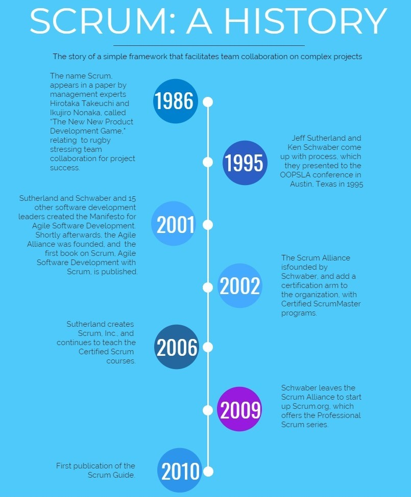
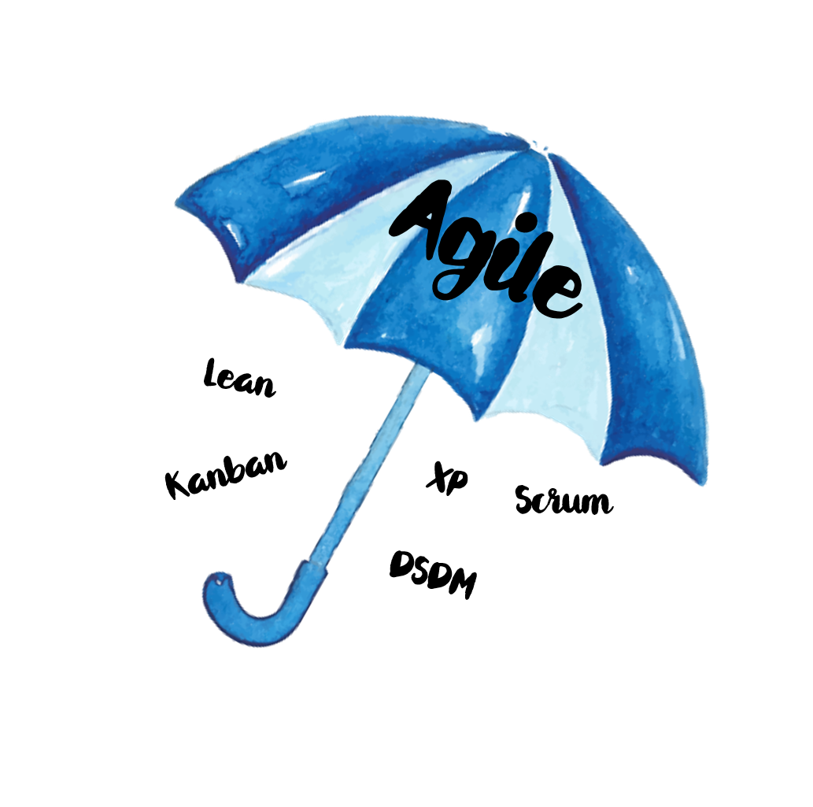

Scrum is widely-used, agile product development strategy - a collection of values, team roles, and rituals used in combination to create iterative work prodacts.

Scrum & Agile

Agile Manifesto -
a statement of values
Individuals and Interections over Process and tools